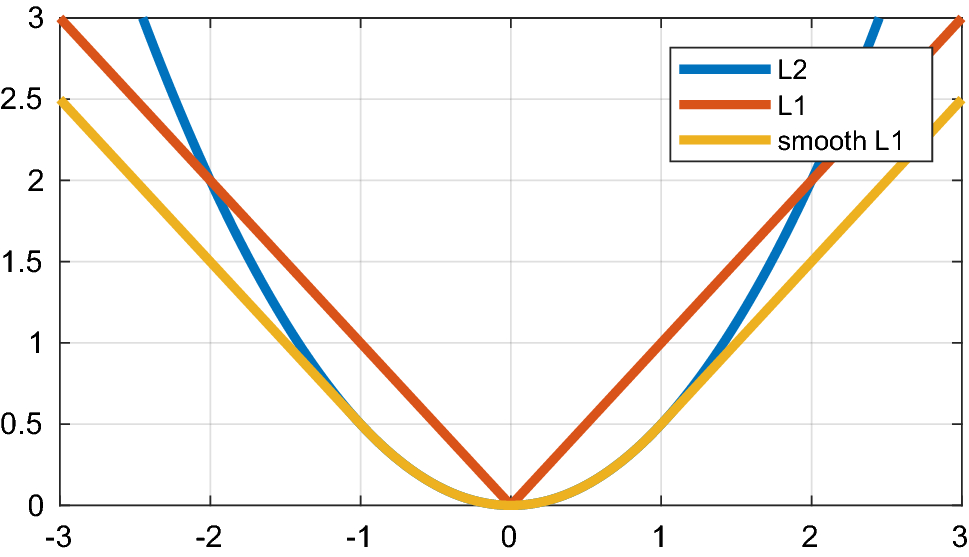

Loss Functions#
import pandas as pd
import matplotlib.pyplot as plt
from sklearn.preprocessing import MinMaxScaler
from sklearn.linear_model import LinearRegression, SGDRegressor
Loss functions#
เราสามารถเขียนสมการของ OLS regression ได้ดังนี้
\(h(X, \beta) = \beta_0 + \beta_1\boldsymbol{x}_1 + \beta_2\boldsymbol{x}_2 + ...\) เรียกว่า hypothesis function (ฟังก์ชันที่แปลงจาก input เป็น prediction)
\(\hat{y} = h(X, \beta)\) เป็น prediction
.fit method ใน scikit-learn มีหน้าที่ทำให้ error ต่ำสุด error นี้คือ loss function (\(L(\text{error})\))
Loss function มีหลายแบบ แต่สำหรับ OLS regression เราใช้ \(L = ||\text{error}||^2 = ||y - \hat{y}||^2\)
Loss function ใช้ในการ fit model ซึ่งต่างจาก performance metric ที่ใช้วัด performance ของ model หลังการ fit
Loss function กับ performance metric อาจเหมือนกันในบางครั้ง เช่น MSE
อย่างไรก็ตาม loss function ต้องเป็น smooth function เพื่อที่เราจะสามารถ diff เพื่อหาค่าต่ำสุดได้
Optimisation#
Optimisation คือการหาชุด trainable parameter ที่ทำให้ loss function (\(L\)) มีค่าต่ำสุด (global minima) เราเรียกวิธีที่ใช้ทำ optimisation ว่า solver
Gradient descent#
Gradient descent (steepest descent) เป็น optimisation วิธีหนึ่ง หลักการคือ กำหนด parameter เริ่มต้น แล้วปรับมันไปในทิศทางตรงข้ามกับ gradient ของ loss function เพื่อเข้าใกล้ local minima ของ loss function

Gradient descent มีขั้นตอนดังนี้ (พิจารณา trainable parameter ตัวเดียวก่อน (\(\beta_0\)) เพื่อความง่าย)
กำหนดค่าเริ่มต้นของ \(\beta_0\)
หา gradient (\(\frac{\partial L}{\partial\beta_0}\)) ที่จุด \(\beta_0\)
ปรับค่า \(\beta_0\) ค่าที่เปลี่ยนไปจะขึ้นกับ gradient และ step size (learning rate (\(\eta\)))
รอบของการอัพเดต parameter โดยใช้ training set ครบทั้งชุด 1 ครั้ง เรียกว่า epoch
ทำไปเรื่อย ๆ จนเข้าสู่เกณฑ์ที่จะหยุด (stopping criterion) เช่น gradient เข้าใกล้ 0 มากพอ หรือ จำนวน epoch ครบตามกำหนด
เราต้องกำหนด learning rate (\(\eta\)) ให้พอดี (เป็น hyperparameter)
ถ้า \(\eta\) น้อยไป ต้องทำ epoch มากขึ้น และอาจติดอยู่ใน local minima เดียว
ถ้า \(\eta\) มากไป อาจวนอยู่รอบ minima นาน หรืออาจลู่ออกจาก minima ก็ได้
การทำ feature scaling จะช่วยให้ loss function converge เข้าสู่ local minima เร็วขึ้น
ถ้าเรา optimise 2 parameter พร้อมกัน (\(\beta_0\), \(\beta_1\)) loss function จะเป็น surface plot เราเรียกมันว่า energy landscape
Gradient descent สามารถถูก generalised ให้ optimise ทุก parameter พร้อมกันได้ สำหรับ OLS regression ที่มี trainable parameter ได้แก่ \(\beta_0\) ถึง \(\beta_n\) (เขียนรวมกันได้เป็นเวกเตอร์ \(\boldsymbol{\beta}\)) เราสามารถทำ gradient descent ได้ดังนี้
หาก dataset มีขนาดใหญ่ แล้วเราอัพเดต trainable parameter ทุกตัวโดยใช้ข้อมูลทั้งชุด จะทำให้ computationally expensive (เรียกว่า batch gradient descent) เราสามารถปรับปรุง gradient descent ได้ดังนี้
Classical Stochastic Gradient Descent (SGD)
สุ่มเลือกข้อมูลมา 1 จุด คำนวณ gradient โดยใช้ข้อมูลจุดนั้น และใช้ gradient ที่ได้ไปอัพเดต trainable parameter ทุกตัว ทำแบบนี้จนใช้ข้อมูลครบทุกจุด จึงจะครบ 1 epoch
ใช้
sklearn.linear_model.SGDRegressorหรือsklearn.linear_model.SGDClassifier
Mini-batch Gradient Descent
แบ่ง dataset ออกเป็นหลาย ๆ ชุด (mini-batch) เลือกมา 1 ชุด คำนวณ gradient โดยใช้ข้อมูลชุดนั้น และใช้ gradient ที่ได้ไปอัพเดต trainable parameter ทุกตัว ทำแบบนี้จนใช้ข้อมูลครบทุกชุด จึงจะครบ 1 epoch
ทั้งสองวิธีข้างต้นคำนวณ gradient โดยใช้ข้อมูลบางส่วน ดังนั้นค่าของ loss function จะ fluctuate จาก epoch หนึ่งไปอีก epoch หนึ่ง โดยที่ SGD จะ fluctuate มากกว่า
ข้อดีของ SGD เทียบกับ mini-batch gradient descent เช่น
เร็วกว่าเมื่อใช้ dataset ขนาดใหญ่
ไม่ติดอยู่ใน local minima เดิม
ใช้ RAM น้อยกว่า
ข้อเสียของ SGD เทียบกับ mini-batch gradient descent เช่น
ต้องเพิ่ม epoch
อาจจะไม่ converge
อาจช้ากว่าเมื่อใช้ dataset ขนาดเล็ก
# Data pre-processing
# Import data and drop duplicates
data = pd.read_csv('../data/fish.csv').drop_duplicates()
# Use only "Width" feature and normalise it
X = MinMaxScaler().fit_transform(data[['Width']])
# Use "Height" as the label
y = data['Height']
# Create models
lr = LinearRegression().fit(X, y) # linear regressor
sgd = SGDRegressor(loss='squared_error', eta0=0.5).fit(X, y) # SGD regressor
# Weight (beta_1)
sgd.coef_
array([14.26359416])
# Bias (beta_0)
sgd.intercept_
array([2.21974935])
# Print the equation of each of the models (y_pred = beta0 + beta1.x)
print("Linear regressor:", f"y = {lr.intercept_} + {lr.coef_[0]}x")
print("SGD regressor:", f"y = {sgd.intercept_[0]} + {sgd.coef_[0]}x")
Linear regressor: y = 2.177560230008516 + 14.30177197137537x
SGD regressor: y = 2.2197493467444804 + 14.263594163870382x
# Plot data and prediction
fig, ax = plt.subplots(figsize=(10, 5))
ax.scatter(X, y) # Plot data
ax.plot(X, lr.predict(X), c='r', label='LinearRegression()') # Plot prediction from the linear regressor
ax.plot(X, sgd.predict(X), c='g', label='SGDRegressor(loss="squared_error")') # Plot prediction from the SGD regressor
ax.set(xlabel="Normalized Fish Width", ylabel="Fish Height", xlim=(0, 1))
ax.legend();

Second-order (Hessian) optimisation#
Gradient descent เป็น first-order optimisation มีวิธี optimisation ที่ converge เร็วกว่า คือ second-order (Hessian) optimisation (เช่น Newton’s method, Quasi-Newton’s method (e.g., Limited-memory Broyden–Fletcher–Goldfarb–Shanno algorithm (L-BFGS)))
Regression loss functions#
Loss function ที่ใช้ใน regression task เช่น
\(L_1\) (MAE) loss
ข้อเสียคือ ต้องปรับ learning rate ให้น้อยลงเรื่อย ๆ ขณะลู่เข้า
\(\quad\quad\quad y_i\) = true label
\(\quad\quad\quad \hat{y}_i\) = predicted label
\(\quad\quad\quad n\) = จำนวนข้อมูล
\(L_2\) (MSE) loss
ข้อเสียคือ Very sensitive to outliers
\(\quad\quad\quad y_i\) = true label
\(\quad\quad\quad \hat{y}_i\) = predicted label
\(\quad\quad\quad n\) = จำนวนข้อมูล
Huber loss (mixed \(L_1\) and \(L_2\), smooth absolute, smooth \(L_1\))
ข้อดีคือ
Adjustable for outliers
Slope บ่งบอกว่าเราเข้าใกล้ minima แล้วหรือไม่
\(\quad\quad\quad y_i\) = true label
\(\quad\quad\quad \hat{y}_i\) = predicted label
\(\quad\quad\quad n\) = จำนวนข้อมูล
\(\quad\quad\quad \delta\) = จุดที่ loss function เปลี่ยนจาก quadratic เป็น linear (ดูกราฟด้านล่างประกอบ)
Loss function เหล่านี้มีลักษณะดังกราฟ

Classification loss functions#
พิจารณา binary classification ซึ่งมีผลจากการทำนาย (outcome) เป็นได้แค่ 0 กับ 1 หากใช้ MAE หรือ MSE จะได้ error เท่ากับ 1 เราควรใช้ loss function ที่มี penalty เมื่อทำนายผิดมากกว่านี้ ดังนั้น MAE หรือ MSE จึงเป็น loss function ที่ไม่เหมาะกับ classification task
Loss function ที่ใช้ใน classification task คือ log loss (cross-entropy loss)
\(\quad y_i\) = true probability ของ sample หนึ่งที่จะอยู่ใน class \(i\) (เท่ากับ 0 หรือ 1 สำหรับ binary classification)
\(\quad \hat{y}_i\) = predicted probability ของ sample นั้นที่อยู่ใน class \(i\) (คำนวณโดยใช้ sigmoid สำหรับ binary classification)
\(\quad N\) = จำนวน class
Regularisation#
หาก validation accuracy ต่ำกว่า training accuracy (หรือ validation loss สูงกว่า training loss) แสดงว่าเราได้ overfitting model

วิธีการหนึ่งที่แก้ overfitting ได้ คือ regularisation
Regularisation คือการปรับค่า (penalise) parameter ใน model เพราะบาง parameter มีขนาดใหญ่ และ loss ของ model นั้นแปรผันตามขนาดของ parameter
Regularisation ทำให้ parameter บางตัวมีขนาดเล็กลงหรือเป็น 0 (ถูกเอาออก) เพื่อป้องกัน overfitting
Regularisation มี 2 วิธีที่นิยม ได้แก่
Lasso (L1) ใช้
sklearn.linear_model.Lasso
Ridge (L2) ใช้
sklearn.linear_model.Ridge
ข้อสังเกต
\(\alpha\) คือ regularisation strength
เป็น hyperparameter ตัวหนึ่งที่กำหนดว่า model จะถูก penalized มากแค่ไหน (ถ้า \(\alpha\) มีขนาดใหญ่ จะลด complexity และ variance ของ model แต่จะมีความ bias มากขึ้น)
เราควรเลือกค่าที่ทำให้ validation accuracy กับ training accuracy ใกล้เคียงกัน แต่ accuracy ก็ต้องมากที่สุดเท่าที่จะทำได้ด้วย

สังเกตว่าพจน์ sum เริ่มจาก \(i=1\) นั่นหมายความว่า intercept (\(\beta_0\)) ไม่ถูก penalised
อย่าลืมทำ feature scaling ก่อนทำ regularisation